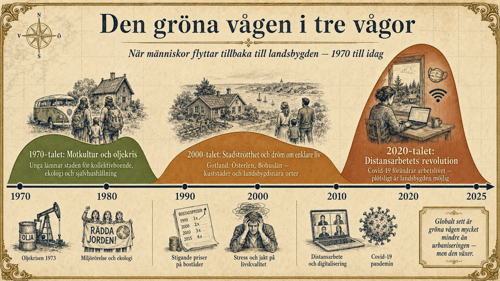

Den gröna vågen
— Motrörelsen mot urbaniseringen, i tre vågor —
En motrörelse i tre vågor
I standardtexten nämnde vi den gröna vågen som en motrörelse till urbaniseringen. Här går vi djupare in på dess historia. Den gröna vågen har inte hänt en gång — den har återkommit i tre olika perioder, varje gång med sina egna drivkrafter och utmaningar.
Och under 2020-talet pågår en ny våg som kanske är den största hittills, driven av en kraft som aldrig funnits förut: förmågan att arbeta var som helst.

Våg 1: 1970-talets gröna våg
Den första gröna vågen i Sverige började under sent 1960-tal och tog fart under 1970-talet. Den var en motreaktion mot rekordårens snabba urbanisering, materialistiska konsumtionskultur och miljöproblem.
Vad drev den? Flera saker samverkade:
- Miljörörelsen. Rachel Carsons bok Tyst vår (1962) avslöjade hur bekämpningsmedel förgiftade naturen. Den svenska miljödebatten tog fart. Vetenskapliga rapporter visade att industrisamhället förstörde luft, vatten och djurliv. För många blev landsbygden ett sätt att leva mer i samklang med naturen.
- Oljekrisen 1973. Den arabiska oljebojkotten gjorde plötsligt energi mycket dyrare. För många blev tron på det stora urbaniserade industrisamhällets stabilitet skakad. Att kunna odla sin egen mat, värma sitt eget hus med ved och vara mindre beroende av globala marknader verkade plötsligt attraktivt.
- Motkulturen. Hippie-rörelsen från USA spreds till Sverige. Tankarna om alternativa livsstilar, kollektivt boende, ekologi och anti-konsumism var lockande för en hel generation unga. Många ville ta avstånd från sina föräldrars värld.
- Vietnamkriget och Vietnam-rörelsen. Politiseringen av en generation skapade ett ifrågasättande av status quo, inklusive den dominerande urbaniserade livsstilen.
Vad hände? Tusentals unga svenskar lämnade städerna. De köpte gamla torp och småbruk i Värmland, Småland, Dalsland, Hälsingland — ofta för symboliska summor. De bildade kollektiv, försökte odla sin egen mat, höll djur, byggde själva, lärde sig hantverk de aldrig fått lära i skolan.
Många misslyckades. Att leva på en gård kräver kunskaper som inte alla hade. Vintern i norra Sverige är hård. Ekonomin var ofta knapp. Inom några år hade en betydande del av "gröna våg-flyttarna" återvänt till städerna.
Men många stannade. Och de som stannade — och deras barn — har formet den svenska bilden av landsbygden som en plats där medvetna val om livsstil görs, inte bara som en plats människor lämnar.
Astrid Lindgren var en av periodens viktigaste röster för en landsbygdsromantik som dock var något mer komplicerad än ren tillbakablickande. Hennes Bullerbyn-böcker och senare Bröderna Lejonhjärta idealiserade en värld av enkla värden, vänskap och natur — som kontrast till storstadens stress.
Våg 2: 2000-talets städer-trötthet
Den andra vågen var mer dämpad och mer pragmatisk. Den började under sent 1990-tal och fortsatte genom 2000-talet.
Drivkrafterna:
- Stigande bostadspriser i Stockholm, Göteborg och Malmö. Att äga en lägenhet i innerstaden blev nästan omöjligt för medelklassen.
- Stress och tempot. Diskussionen om "stress-relaterad ohälsa" tog fart. Många människor — särskilt familjer med barn — kände att städernas tempo var ohållbart.
- Internets framväxt gjorde det möjligt att arbeta mer flexibelt än tidigare. Tidig "frilansare-rörelse" upptäckte att de kunde bo nästan var som helst om de hade en bra uppkoppling.
- Estetisk längtan. Återupptäckten av landsbygdsromantik i livsstilstidningar, TV-program (Sommar med Ernst, senare Mandelmanns gård) och populärkultur skapade en bild av landsbygdslivet som något eftersträvansvärt.
Vad hände? Flytten gick ofta till landsbygdsnära orter snarare än till riktig glesbygd. Gotland, Österlen, Bohuslän, kuststäderna i Norrland, delar av Värmland blev populära. Folk flyttade ofta inte ut helt, men minskade sin närvaro i staden — köpte ett "torp" på Gotland eller en gård i Skåne dit familjen åkte långa helger och somrar.
Detta var en mer borgerlig, mer ekonomiskt resursstark version av gröna vågen. Och den lade grunden för det som skulle komma.
Våg 3: Distansarbete-revolutionen 2020–
Och så kom covid-19. I mars 2020 stängde Sverige och resten av världen ner. Miljoner människor som aldrig tidigare arbetat hemifrån tvingades plötsligt göra det. Inom ett par månader hade nya rutiner satts. Inom ett halvår hade tekniken — Zoom, Teams, distansverktyg — utvecklats dramatiskt.
Och människor upptäckte något. De kunde faktiskt arbeta var som helst.
Det som tidigare bara varit möjligt för frilansare och en mycket liten skara av digitala nomader blev nu möjligt för stora delar av tjänstesektorn. Lärare, journalister, ingenjörer, jurister, ekonomer, designers — alla började fundera på var de egentligen ville bo.
Resultatet: En oväntad flyttvåg från städerna. I Sverige fick orter som Visby, Åre, Sigtuna, Mariefred, Gränna, delar av kustnära Norrland plötslig inflyttning. Bostadspriserna i dessa orter steg dramatiskt under 2020-2022.
Liknande fenomen syntes globalt:
- USA: "Zoom towns" — orter som Boise (Idaho), Austin (Texas), Burlington (Vermont), Bozeman (Montana) växte snabbt när Silicon Valley- och New York-arbetare flyttade ut.
- Italien: Vissa byar i Toscana, Sicilien och Sardinien började sälja hus för 1 euro för att locka inflyttare. Tusentals utländska köpare nappade.
- Spanien: En statlig satsning på att återbefolka España vaciada — "det tömda Spanien" — fick stöd av distansarbetare som flyttade ut till lantliga byar.
- Portugal, Estland, Costa Rica, Mexiko, Indonesien — flera länder lanserade så kallade "digital nomad visa" för att locka distansarbetare. Estland var först ut 2020.
Vem kan?
Det är viktigt att stanna vid en obekväm sanning. Distansarbete är ett privilegium.
För att kunna arbeta hemifrån — eller från landsbygden — behöver man:
- ett välbetalt tjänstearbete som inte kräver fysisk närvaro
- en bra dator och tillförlitlig internetuppkoppling
- en arbetsgivare eller egen verksamhet som tillåter det
- ofta också utbildning och en specifik yrkesroll
Det här är en växande del av arbetsmarknaden — men det är fortfarande bara en minoritet av alla anställda. För en undersköterska, en busschaufför, en fabriksarbetare, en restauranganställd är distansarbete omöjligt. Deras arbete måste utföras på en fysisk plats.
Det betyder att den nya gröna vågen är till stor del en medelklassrörelse. Det är högutbildade tjänstearbetare som flyttar ut. Det förändrar landsbygden, men inte alltid på sätt som alla välkomnar.
Gentrifiering på landsbygden
En oväntad konsekvens av den nya gröna vågen är gentrifiering — när en plats förändras och blir dyrare på sätt som tränger ut de som funnits där länge.
På Gotland har bostadspriserna stigit så mycket att unga gotlänningar har svårt att hitta egen bostad på ön där de växt upp. Stockholmare med dubbelt så hög inkomst köper husen och stänger ute lokalbefolkningen från sin egen ö.
I små byar i USA där "Zoom-flyktingar" från San Francisco eller New York flyttat in har huspriserna fördubblats på några år. Lokala lärare, restauranganställda och fabriksarbetare har inte längre råd att bo i sina egna samhällen.
Det är en moralisk fråga som blir svårare att hantera ju starkare distansarbete-trenden blir. Den nya gröna vågen kan rädda landsbygden — men den kan också göra den otillgänglig för dem som länge bott där.
Är trenden permanent?
Efter de mest dramatiska åren 2020-2022 har distansarbete-vågen mattats något. Många företag har börjat kräva att anställda kommer in på kontoret några dagar i veckan. Hybridarbete — där man kombinerar kontor och hemarbete — har blivit den nya normen.
Men det är fortfarande en helt annan värld än före 2020. Många människor flyttar längre från sitt kontor än vad som skulle varit otänkbart då, så länge de kan pendla in några dagar i veckan. Pendelavståndet har permanent förlängts. Det gör att områden som tidigare var "för långt bort" plötsligt är möjliga.
I framtiden kan vi få ännu fler gröna vågor om:
- AI och automatisering ersätter ännu fler typer av arbete som måste utföras på plats
- Klimatförändringar gör vissa städer mindre attraktiva (för varma, för översvämmade)
- Energi- och bostadspriser fortsätter att stiga i städerna
Eller så kanske vågen ebbar ut. Människor är sociala varelser, och städerna har alltid lockat med sitt myller och mångfald. Kanske kommer den nya generationen tillbaka till städerna när de väl är vuxna.
Vad det betyder
Den gröna vågen är liten i absoluta siffror jämfört med urbaniseringen. Men den är viktig av två skäl.
För det första visar den att urbaniseringen inte är en obönhörlig lag. Människor kan välja annorlunda. Tekniska och sociala förändringar kan öppna nya möjligheter. Det vi tror är permanent kanske inte är det.
För det andra visar den att framtidens geografi kan bli mer komplex. Istället för en värld där de flesta bor i ett fåtal stora städer kan vi få en värld där människor sprids ut igen — med staden som nav men inte längre som enda möjliga hemort.
Det är inte säkert. Men det är möjligt. Och det är en av de mest spännande frågorna i 2000-talets geografi.
Djupdykning till avsnitt 5 (Urbanisering). Fördjupningsnivå.